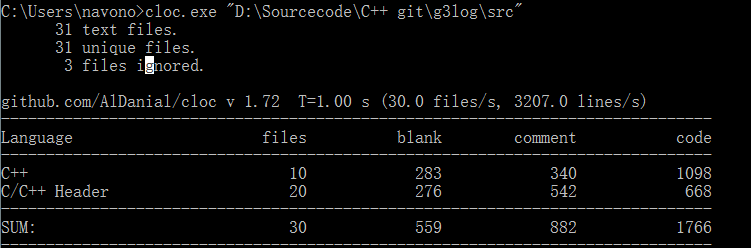
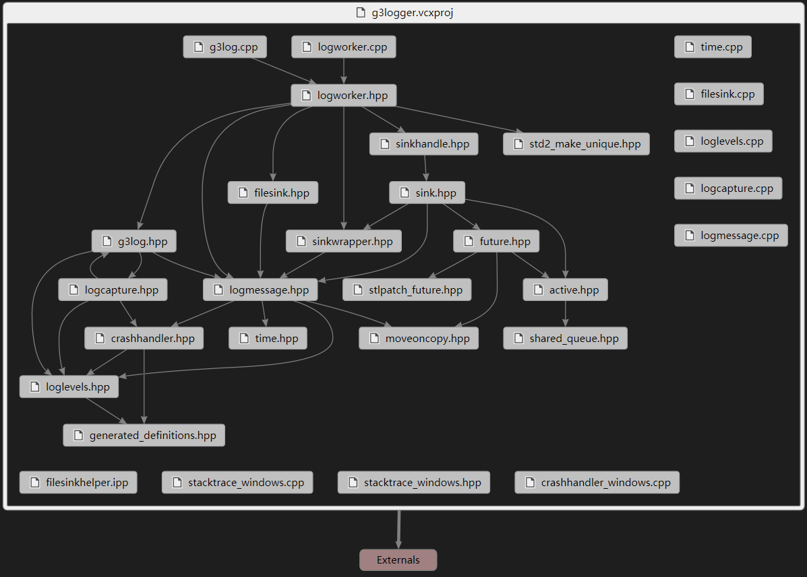

g3log源码分析
- 1. 代码量
- 2. 结构
- 2.1. 头文件结构
- 2.2. 主要类
- 2.3. 全局方法
- 3. 线程模型
源代码地址：github
代码量

从代码量上看，代码不是很多，所以整个库的结构也不会太复杂。首先从整体上有个概念，就需要看下整个库的类结构如何，以及类间的关系如何。
结构
头文件结构
通过VS2015的头文件依赖图，从整体的头文件依赖结构上看下整个工程是如何依赖的。

主要类
首先是LogWorker，这是库的核心类，包含了创建LogWorker实例的静态方法：
1
| static std::unique_ptr<LogWorker> createLogWorker();
|
以及构建本地log日志文件信息和Sink的方法：
1
2
3
4
5
6
7
| std::unique_ptr<FileSinkHandle> addDefaultLogger(
const std::string& log_prefix,
const std::string& log_directory,
const std::string& default_id = "g3log");
template<typename T, typename DefaultLogCall>
std::unique_ptr<g3::SinkHandle<T>> addSink(std::unique_ptr<T> real_sink, DefaultLogCall call);
|
最后就是保存日志的两个方法，一个是正常的保存，一个是异常的保存：
1
2
| void save(LogMessagePtr entry);
void fatal(FatalMessagePtr fatal_message);
|
内部还有一个私有的实现impl：
LogWorkerImpl内部保存了Sink的的列表，以及一个C++11线程的Active对象。也是这个log库号称异步的原因。
线程的Active实现如下：
1
2
3
4
5
6
7
8
9
10
11
12
13
14
15
16
17
18
19
20
21
22
23
24
25
26
27
28
29
30
31
| typedef std::function<void() > Callback;
class Active {
private:
Active() : done_(false) {}
Active(const Active &) = delete;
Active &operator=(const Active &) = delete;
void run() {
while (!done_) {
Callback func;
mq_.wait_and_pop(func);
func();
}
}
shared_queue<Callback> mq_;
std::thread thd_;
bool done_;
public:
virtual ~Active() {
send([this] { done_ = true;});
thd_.join();
}
void send(Callback msg_) {
mq_.push(msg_);
}
static std::unique_ptr<Active> createActive() {
std::unique_ptr<Active> aPtr(new Active());
aPtr->thd_ = std::thread(&Active::run, aPtr.get());
return aPtr;
}
};
|
整体的思路就是维护一个消息queue，然后在run中不停地从queue中取对象执行。当queue中没有消息时，run会等待在mq_.wait_and_pop(func)这里。
LogWorker的save和fatal是将消息转发给LogWorkerImpl的后台线程去执行，具体执行的是LogWorkerImpl的bgSave和bgFatal。而这两个方法最后都会传递给Sink的实例的send去执行。接下来就是Sink的具体实现。源码中只实现了FileSink，也就是将日志消息保存到本地文件中。这个类的内部的fileWrite方法也是Thread Active最终要执行的执行体。
这里有个需要注意的地方。就是内部使用的Sink都是被封装成模板类Sink（继承SinkWrapper接口）的实例，Sink本身有两个方法：
1
2
3
| void send(LogMessageMover msg) override；
template<typename Call, typename... Args>
auto async(Call call, Args &&... args)-> std::future< typename std::result_of<decltype(call)(T, Args...)>::type>();
|
以及一个函数对象_default_log_call：
1
2
| typedef std::function<void(LogMessageMover) > AsyncMessageCall;
AsyncMessageCall _default_log_call;
|
保存的是最初传入的FileSink::fileWrite。
第一个方法是对SinkWrapper接口API的实现。而第二个方法则是返回给用户用于异步调用的。也就是SinkHandle，其中的T就是Sink。最后Sink保存在LogWorkerImpl的std::vector _sinks中。
最后一个就是LOG宏中用到的LogCapture。此类中包含了一条log日志的所有信息：
1
2
3
4
5
6
7
8
| std::ostringstream _stream;
std::string _stack_trace;
const char *_file;
const int _line;
const char *_function;
const LEVELS &_level;
const char *_expression;
const g3::SignalType _fatal_signal;
|
在析构时，调用全局的：
1
| saveMessage(_stream.str().c_str(), _file, _line, _function, _level, _expression, _fatal_signal, _stack_trace.c_str());
|
进行日志保存。
全局方法
包含以下几个全局设置的方法：
1
2
3
| void initializeLogging(LogWorker *logger);
void setFatalPreLoggingHook(std::function<void(void)> pre_fatal_hook);
void setFatalExitHandler(std::function<void(FatalMessagePtr)> fatal_call);
|
还有在namespace internal的：
1
| void saveMessage(const char *entry, const char *file, int line, const char *function, const LEVELS &level, const char *boolean_expression, int fatal_signal, const char *stack_trace)
|
线程模型
1
2
3
4
5
6
7
8
9
10
11
12
13
14
15
| graph TB
subgraph main
createLogWorker-->addDefaultLogger
addDefaultLogger-->initializeLogging
end
subgraph LogWorkerImpl
bgSave-->sink'save
end
subgraph sink
sink_bg-->_default_log_call
end
LOG-->saveMessage
saveMessage-->LogWork_save
LogWork_save-- async -->bgSave
sink'save-- async -->sink_bg
|
不支持。。。Fu*k。